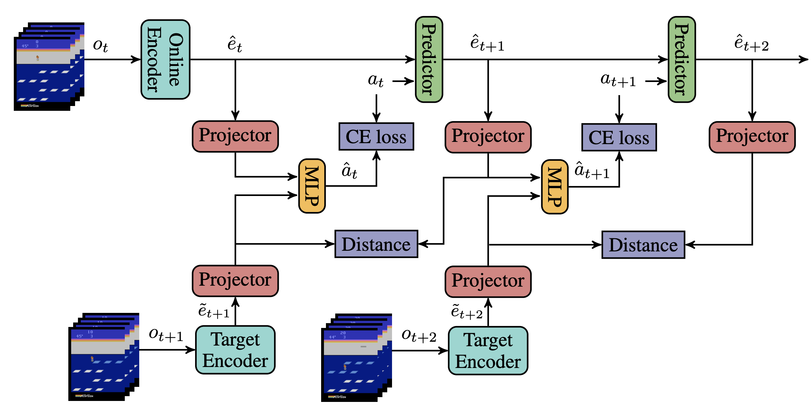
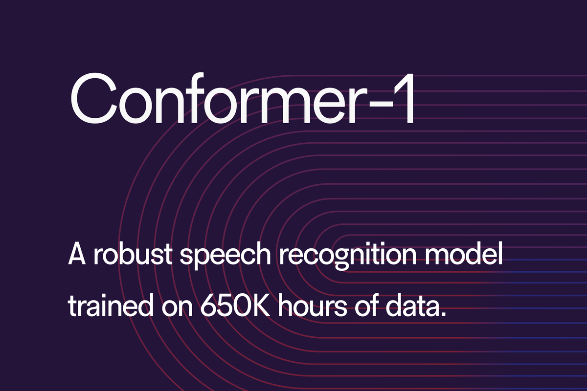
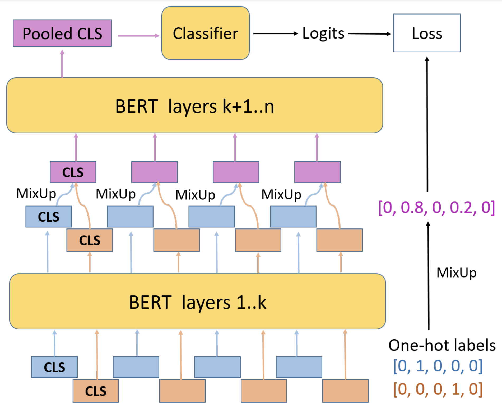
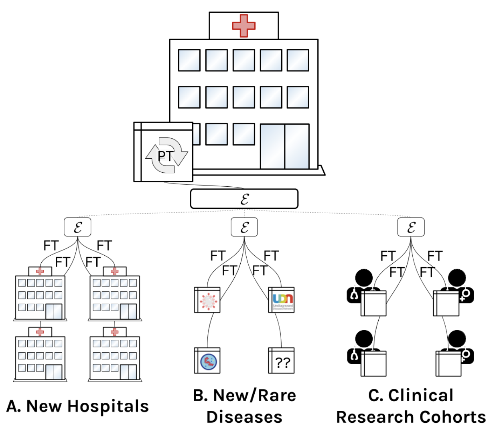

Research (Updated 06/2024)
I believe the ability to learn from observations and interacting with the world in an unsupervised manner is a crucial stepping stone to unlocking general intelligence. My primary research focus revolves around self supervised learning (SSL) and novelty guided explorations, with an emphasis on their applications in computer vision and control.
|
|

|
Light-weight probing of unsupervised representations for Reinforcement Learning
Wancong Zhang, Anthony GX-Chen, Vlad Sobal, Yann LeCun, Nicolas Carion
code /
arXiv
Reinforcement Learning Conference, 2024
Presents an efficient probing benchmark to evaluate the fitness of unsupervised visual representations for reinforcement learning (RL). Applied it to systematically improve pre-existing SSL recipes for RL.
|
|

|
Conformer-1: Robust ASR via Large-Scale Semisupervised Bootstrapping
Wancong Zhang*, Luka Chkhetiani*, Francis McCann Ramirez*, Yash Khare, Andrea Vanzo, Michael Liang, Sergio Ramirez Martin, Gabriel Oexle, Ruben Rousbib, Taufiquzzaman Peyash, Michael Nguyen, Dillon Pulliam, Domenic Donato
arXiv
Showcases an industrial-scale end-to-end Automatic Speech Recognition model trained on 570k hours of speech audio data using Noisy Student. It achieves competitive word error rates against larger and more computationally expensive models.
|
|

|
MixUp Training Leads to Reduced Overfitting and Improved Calibration for the Transformer Architecture
Wancong Zhang,
Ieshan Vaidya
arXiv
Adapts the computer vision data augmentation technique MixUp to the natural language domain, reducing calibration error of transformers for sentence classification by up to 50%.
|
|

|
A comprehensive EHR timeseries pre-training benchmark
Matthew McDermott,
Bret Nestor,
Evan Kim,
Wancong Zhang,
Anna Goldenberg,
Peter Szolovitz,
Marzyeh Ghassemi
arXiv
ACM CHIL, 2021
Establishes a pre-training benchmark protocol for electronic health record (EHR) data.
|
|
{kind=link}